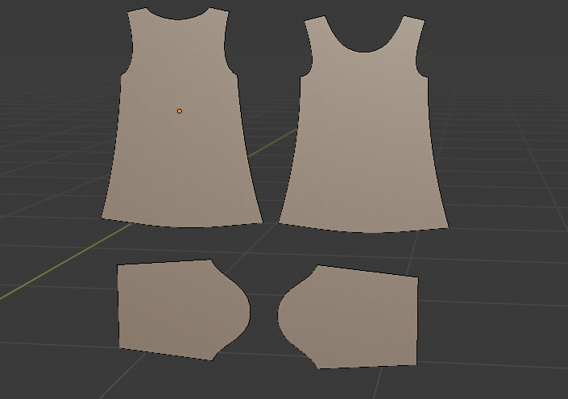
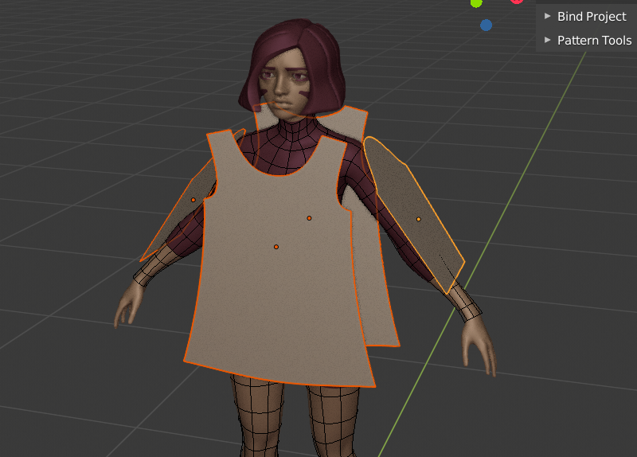

Video#
Text version#
Garment Tool supports only cyclic (closed) 2d Bezier curves. To create one use Shift+A > Curve -> Bezier Circe, and make any shape you wish from it. For T-shirt, add four bezier circles, and model them into sewing patterns, like on image below: 
Place Sewing Patterns next to your character. 
To create garment click +(Plus) icon, in the Garment Tool Panel.
More settings will popup, containing all the properties of T-shirt (sewing patterns, sewings, pins etc).
Use 'Edit Sewings' button (chain icon) in the sewings box to connect patterns together. You can add, remove, change existing sewings, flip sewing direction, while in edit sewing mode. Press Enter / Spacebar to accept them sewings.
Notice - all the 2d curves, that were connected with sewings, are automatically assigned to the T-Shirt Sewing Patterns list.
You can now convert T-Shirt to 3d mesh, with 'Convert To Mesh' button. New collection will be created named: Generated + garment_name
From now on output mesh can be simulated using Blenders build in cloth sim.
Enable 'Use Bend Deformer' for both sleeves patterns, so that they will wrap around the character arms.
Notice - GTool automatically creates and assigns vertex groups for each 2d pattern.
Usually when simulating, the gravity will pull the cloth too fast to earth, so that generated T-shirt won't have time to stick to character. To avoid that, you can use 'Initialize Simulation' button -> it will animate the gravity strength from 0 to 9,8 m/s^2 over the 'Sim Time' time. it will also animate the sewing force, and the 'Max Shrinking' property (if used).
Usually when simulating you should increase the cloth 'Quality Steps' above 15, to prevent cloth going through body surface, and decrease the collision distance to around 0.002. The collision distance should be reduced also on the body of character.
When you are satisfied with the simulation result you can: Save the bake into the shape key with 'Save to shape key' button. You can save multiple shape keys to object, as long as you won't change the mesh topology.